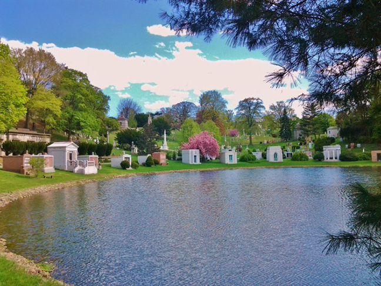
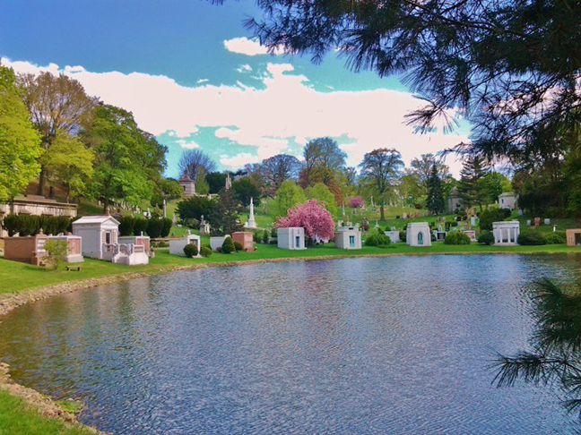

Come visit us
There are many ways to visit Green-Wood’s 478 acres:
You can walk Green-Wood’s grounds to follow the steps of New Yorkers and Americans dating back to 1838. Stroll the grounds on your own, or use our self-guided walking tour books and mobile app. You will discover a peaceful oasis in urban New York, and 175 years of history and beautiful landscape. Admire the many monuments, bird- and animal-watch, and look at the many old-growth trees. Admission to Green-Wood is free at all times, and free maps are available at any of our entrances.
Choose a guided tour or other event to attend. Public programs at Green-Wood highlight the landmark’s vast array of themes including New York culture, the Revolutionary and Civil Wars, landscape design, art and architecture, and much more.
Book a private group or a school group to see Green-Wood by guide.
Plan an educational day
Historic Green-Wood Cemetery, via The Green-Wood Historic Fund, offers a wide range of opportunities for educators and students. An obvious resource to create powerful lessons on the Civil War and American Revolution, Green-Wood and its wealth of trees, lakes, birds, sculpture and architecture, is also a springboard for learning at all academic levels, including professional development and tours for special interest groups. Click here for highlights from past education programs at Green-Wood and ideas for your class.
In conjunction with local public schools, the Historic Fund offers educational programs on topics ranging from the Civil War to art and architecture. The ever-expanding Historic Fund Archives record the history of the Cemetery with photographs, documents and artifacts of Green-Wood and its permanent residents. Stories about many of these residents, as well as coverage of Historic Fund events and Green-Wood news, are published in The Arch, the Historic Fund’s magazine. The Historic Fund Bookstore offers books about Green-Wood, as well as best-selling and hard-to-find books about its famous and infamous inhabitants.
Go on a historical tour
Unique educational programming opportunities at Green-Wood include the following:
1. Science – Students see first-hand the effects of acid rain on stone, metal and trees. (Grades 4-12)
2. Math – Teachers have led classes in statistical analysis and graphing, creating charts that compile independent research in mean, median and mode. (Grades 5-8)
3. Language Arts and Theatre – The many lives and stories at Green-Wood make it a place that inspires writing, poetry and performance. Students have researched historical characters from the 19th and 20th centuries and led performance-based tours for the general public. (Grades 6-college)
4. Symbolism and Story Telling – The nearly 600,000 monuments on display at Green-Wood are rich in symbolism. Upside down torches (symbolizing an extinquished flame, or a life ended) or a whimsical hourglass with wings (symbolizing that “time flies”) are just two of the hundreds of examples of symbolism study possible. (Grades 4-college)
5. The Civil War – Green-Wood is home to countless monuments that reveal New York’s involvement and the very human side of that era (1861-1865). In fact, one of the oldest monuments in the United States, The Civil War Soldiers’ Monument (erected in 1869) is here at Green-Wood. This monument features four life-size statues of soldiers and plaques that students use to interpret and discuss this era. (Grades 4-10)
6. Music and Art – A guided walk through Green-Wood offers both the highest point in Brooklyn (with views of New York Harbor, The Statue of Liberty and the Empire State Building) but also countless opportunities for discovery, research and serendipity. Classes have used Green-Wood to learn about such historical characters as John Matthews (“The Soda Fountain King”), George Tilyou (“19th Century’s Master of Creative Mayhem” and the founder of Coney Island’s Steeple Chase Park) and Dr. Susan McKinney Steward (the first African-American female doctor in New York) and have used these characters as jumping-off points to compose music and create collages, drawings and murals.
7. Stained Glass Studies – Beyond the fact that Louis Comfort Tiffany (founder of Tiffany Glass) is buried at Green-Wood, the grounds here are rich with mausoleums boasting a remarkable range of 19th-century stained glass art. Art teachers interested in this craft could avail themselves of Green-Wood to train students in this art.
8. Inventors and Innovators – Green-Wood is a “Who’s Who” of 19th- and early 20th-century inventors. A short list of some of these are: Elias Howe (inventor of the sewing machine), Eberhard Faber (inventor of the pencil), Henry Chadwick (dubbed the “Father of Baseball” by President Theodore Roosevelt), and Charles Feltman (inventor of the hot dog). People who invented everything from the paper clip to the tuxedo are here at Green-Wood. (Grades 5-12)
Schedule a School Visit
All tours and lesson sessions will be led by Steven Estroff, The Historic Fund’s education and outreach coordinator.
Steve worked as a middle school teacher for 15 years and well understands the realities of teachers. He provides support, materials and guidance to help you and your class have a first-rate and meaningful learning experience at historic Green-Wood. You can contact Steve at SteveEstroff@Green-Wood.com or 718-210-3010 for more information or to arrange a school trip.